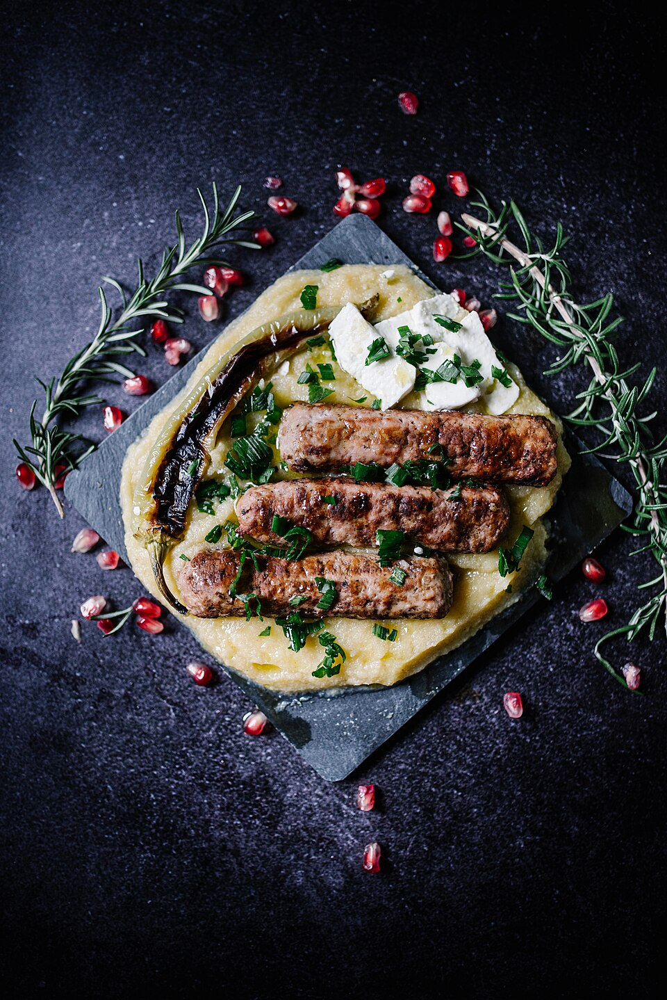

Carnes · Bovinos
Espetinhos temperados

Ingredientes
- 500 g de carne bovina (coxão mole, patinho ou alcatra) em cubos grandes
- 8 a 10 cebolinhas pequenas
- 1 pimentão verde em pedaços
- 2 tomates médios sem sementes, em pedaços
- 1 cubinho ou tablete de caldo de carne
- ¾ de xícara (chá) de água
- 1 colher (chá) de mostarda
- ½ colher (chá) de molho inglês
- Óleo para untar
- Sal a gosto
Modo de preparo
- Espete a carne alternando com cebolinha, pimentão e tomate.
- Dissolva o caldo na água quente; junte mostarda e molho inglês.
- Unte grelha ou frigideira, frite os espetinhos ao ponto desejado, virando e regando com o molho. Também pode assar em forno quente.
Observação: serve também com peito de frango ou peixe firme (atum).